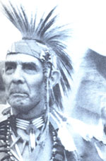
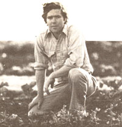

Seventy-five-year-old Tom "White Buffalo" Greenwood, a member of the Cherokee nation, has devoted much of his life to furthering the cause of Native American rights. While still in his 20's, Tom became a member of the Indian Council Fire and fought to extend voting rights to all American Indians. After founding several Indian resource centers, Greenwood served as a delegate to the National Congresss of American Indians. And in 1961, as a chairman of the American Indian Chicago Conference, he helped establish the Indian policy that was presented to President Kennedy as an alternative to the harsh policies of the previous administration.
Today, Tom's energy and enthusiasm remain high. For Greenwood, being in "retirement" means only that he has more time to concentrate on two of the most important issues of his life: the restoration of the environment and the preservation of his 2,000-year-old heritage. Tom recently completed a successful campaign to preserve 92 miles along the historic Illinois and Michigan Canal. And he's currently coauthoring a history of the Des Plaines River Valley.
The white buffalo, from which Greenwood got his Indian name, is looked upon by Native Americans as a creature of great vision. Tom explains that the animal is considered a good omen sent by the Great Spirit.
But Greenwood is quick to point out that individual names are of little importance to him. "A hundred years from now," he says, "they'll forget the names-but the land that you've made a monument will always be there"- Suzanne P. Law
Like many gardeners, Peter Hatch used to dream about the possibility of working full-time in his garden instead of in an office. Unlike most of us, though, Peter eventually decided to make his dream a reality . . . and he prepared for a career in horticulture.
Hatch-who already had a degree in English-began by enrolling in a landscape gardening program at Sandhills Community College in Carthage, North Carolina. His first job as a horticulturist was with Old Salem, Inc., in Winston-Salem, where he helped re-create the gardens of the original Moravian settlers. Following that successful restoration, Hatch was recruited by the Thomas Jefferson Memorial Foundation to work at Monticello.
As superintendent of grounds at Jefferson's famous estate, Peter traces the footstep's of America's third president in order to reproduce the ten acres of gardens and orchards that once surrounded the great man's home. Hatch and his colleagues strive to make the grounds precisely as they were in Jefferson's day. But simply planting fruits and vegetables in the locations that Jefferson chose is not enough: Peter has searched seed depositories across the nation to obtain the exact pre-1820 varieties that the president grew.
Hatch is grateful for his years as an English major; he believes that for the historic horticulturist cultivation lion and soil cultivation go hand in hand. "When you're trying to re-create a historic landscape," he says, "it's important to have a broad sensibility about the nature of early people and a grasp of Western civilization."
Of course, Peter still doesn't spend his entire workweek cultivating plants. Considerable time is given to pe rusing nineteenth-century botanical tomes and writing papers for such organizations as the Alliance for Historic Landscape Preservation. But more often than not, Hatch can be found tilling the soil, involved in the work he most enjoys.- Ed Joyce.
Many New York City cabs are now displaying bumper stickers that say Stay AliveDon't Drink and Drive. The stickers were supplied free of charge by the WILL ROGERS INSTITUTE as part of its campaign against drunk driving. The institute has also prepared literature on drinking and driving, which is being used by state police in New York, New Jersey, and California.
The Farm Animal Reform Movement-in cooperation with hundreds of other organizations and individuals-sponsored the Great American Meatout on March 20. Television personality BOB BARKER served as national chairman of the event, which was designed to bring attention to the negative aspects of meat eating and to encourage Americans to reduce meat consumption.
Country star ARCHIE CAMPBELL donated his time last fall to make a series of public service announcements on behalf of the endangered Florida panther. The intention of the announcements was to inform the public about the animal's plight: It's believed that only about 30 panthers remain in Florida.- DM.
|
 PHOTO BY THE AUTHOR |
 Photo By Robert Llewellyn |
|